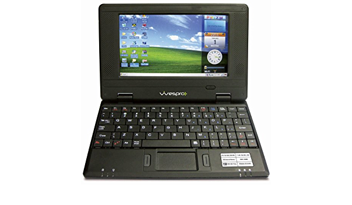

Cateogries

Laptops

Desktops

Identifying exactly which computer you own can sometimes be a challenge, depending on the manufacturer. Usually the manufacturer name is listed on the front, while the exact model number may be found on the back.
Digital computers have existed in various forms since the early 1940s. One of the most prominent computers of the time, the ENIAC, used vacuum tubes and was considered to be the first general purpose electronic computer. However, computer manufacturers in the early 1960s started using transistors. The development of integrated circuits (ICs) made computers steadily increase in computing power, all the while bringing down costs of manufacture and power consumption.
By the 1980s the first personal computers came on the market, giving the casual user unparalleled computing abilities at home.
Delhi is a fast-paced city on its way to joining the league of various corporate hubs. It is the same city that houses one of the finest places for the IT sector and Tech enthusiasts. Everyone in the town works on their Laptop devices regularly for various purposes.
The hot summer and extremely cold winters sometimes make the job harder for Laptop devices to work effectively. With time, the Laptops start deteriorating, depending on how the device is used and handled. Various issues arise like a dead battery, broken screen, spilled water or tea, and slow performance.
REPAIR IT is the ultimate solution an individual in Delhi would be looking for to eliminate all issues. With our highly skilled technicians, high-quality spare parts, and the promise of an assured warranty, we offer a smarter way to repair your Laptop devices, from motherboard repair to replacement of parts like screen, battery, keyboard, touchpad and others. All under one roof at the REPAIR IT's online Solutions in Delhi
A Desktop Personal Computer is a computer which allows the user to work at a singular location, usually at a table or desk. Desktop computers do not necessarily include a built in display or keyboard, so additional peripherals may be required for function.
The first computer to actually sit completely atop a desk in 1970 was the Datapoint 2200, designed by the Computer Terminal Corporation to interface with a mainframe computer, but had the ability to function as a stand alone computer. 1977 saw the first “home” computers to be marketed towards the consumer market in the Apple II, the Commodore PET, and the TRS-80. Throughout the 1980’s and early 90’s, the design consisted largely of a horizontal oriented case, with integrated keyboards and a display which sat on top. Over the course of the 90’s, this design fell out of fashion in favor of the contemporary “tower” case design, where the components of the computer are encased in a vertically oriented case with ports on the back to connect the user’s choice of peripherals.
Nowadays, the desktop computer takes many forms, from a compact case roughly the size of an optical drive, to all-in-one machines with integrated screens and keyboards, to full-sized, liquid-cooled, powerful gaming PCs. Although they have become less popular over the years as laptops have gained mass appeal, desktops are still used and even preferred for intensive computing and high-performance gaming.
Regardless of the industry you work in, computers play a vital role in the productivity of your organization. And for the most part, new software and hardware advancements released over the years have made you more efficient than ever before.
But if you’re regularly using computers in your day-to-day processes, you’ll eventually run into some technical problems that need your attention. Thankfully, there are steps you can take to remedy the issues and carry on with your workday.
Book ServiceIf given a choice between computer and a laptop, what would you choose?
We’re guessing a laptop because they’re light weight and portable, unlike computers. In fact, if you’re constantly on the go, you’ll know the importance of a laptop and also some common problems that often arise in a laptop. Apart from a laptop warranty, what can really save you from these common problems are some tips listed below
Laptops usually slows down when there are too many files and programs saved on it, as a result of regular use. To avoid this problem, we recommend you free up some space on the hard drive by deleting temporary files, keeping your desktop organised and getting rid of programs you don’t regularly use. You could also transfer old files to an external hard drive to improve your laptops performance.
This is most likely due to overheating, which is usually caused due to dust build-up in the case and around the fan. If your laptop keeps shutting down more often, try cleaning it thoroughly to get rid of dust. The simplest way to do this is to blow air into the side vent. Make sure you do this when the laptop is turned off completely. If this doesn’t help, you can get a cooling fan for your laptop.
Laptops usually have a good battery life of over 4-5 hours, if you use it at a stretch. But if your laptop’s battery drains out quickly, the first thing you should do is reduce the number of open tasks. This puts an additional drain on the battery. Avoid keeping multiple windows open and disable the bluetooth option to avoid draining your laptop battery further. Lastly, switch on the ‘Energy Saving’ mode and keep the brightness low. If you’re using Windows XP, go to ‘Settings’ and click “Power Options” in your control panel. Similarly, on a Macbook, go to ‘Settings’ and search for “Energy Saver” in System Preferences to adjust the brightness.
If your laptop battery stops charging, you’ll need to replace it even if your laptop is under warranty, as batteries are not covered in the manufacturer’s warranty period. If your laptop’s battery is not removable, you’ll need to replace the laptop.
There are a lot of other issues that arise in a laptop, especially after a year or two of the manufacturer’s warranty period. This includes motherboard failure, hard drive failure, LCD malfunction, processor malfunction, etc. If your laptop is covered with an extended warranty plan, you need not worry about spending on repairs at the last minute. The REPAIR IT's Extended Warranty plan includes everything that is covered in a standard manufacturer’s warranty and starts immediately after the expiry of the manufacturer’s warranty.
Book ServiceA Chromebook is a laptop or a tablet that runs a Chrome OS operating system. They also have limited offline capability and are meant to operate a variety of tasks using the Google Chrome browser. Most of the data and applications are on the cloud and not on the machine itself. Because of this, they are not using traditional applications like word processing or instant messaging but instead Web apps from the Chrome Web Store. You aren’t able to install third-party software on a Chromebook, like with devices that have Windows 10 or macOS. In order to get apps, you have to go to Google Play Store. There are some features that can be viewed offline such as Gmail, Google Calendar, Google Keep, Google Drive, Amazon's Cloud Reader, the New York Times App, and Angry Birds. Android Apps are available on all newer Chromebooks. With the exception of the first three released devices, Chromebook uses Coreboot. Many Chromebooks on the market are of the same size as late model Netbooks from 2010-2011 and are an indirect replacement for many of these "Wintel" netbooks.
The first Chromebooks to the market were from Acer and Samsung in 2011. They were introduced at the Google I/O conference and started selling a few months later. Two years later Lenovo, Hewlett Packard and Google entered the market. There are also non-laptop versions that have been released, for example the Chromebox was introduced in 2012. It was a desktop. In 2014, an “all-in-one” device called the Chromebase by LG was introduced. And in 2018 Acer and Google both released Chromebook tablets.
There are pros and cons of using a Chromebook. For example, Chromebooks are a lot faster than a regular laptop because they aren't slowed down with Windows bloatware and junk programs taking up storage. You have fewer background processes running for this reason, which makes the Chrome OS quicker. However, a downside is you can’t run your legacy macOS or Windows programs on a Chromebook.
These features make a Chromebook a better choice for someone who needs a simple laptop to browse the web, or students who need a laptop to use for school and need a cheap (but capable) laptop. These advantages, along with robust serial number-based remote management on Retail, and Chromebooks for education (which include the management license with the Chromebook must be purchased separately for Retail non-EDU models). They are becoming popular in the classroom and "one laptop per child" programs.
Book ServiceWe want opinions from our Customers about how can we strengthen/ improve our services through this online platform. Also, Our customers can suggest us UI designs, BUGS and accessebility issues, we will update them.
© 2022 Siddharth Shravan Jha